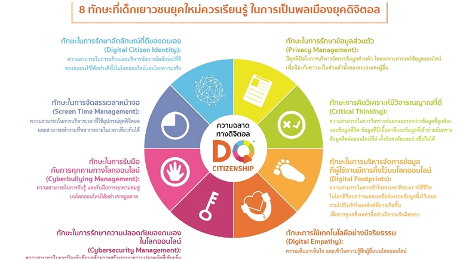

ความเป็นพลเมืองดิจิทัล (Digital Citizenship)
คืออะไร ความเป็นพลเมืองดิจิทัลคือ พลเมืองผู้ใช้งานสื่อดิจิทัลและสื่อสังคมออนไลน์ที่เข้าใจบรรทัดฐานของ การปฏิบัติตัวให้เหมาะสมและมีความรับผิดชอบในการใช้เทคโนโลยี โดยเฉพาะอย่างยิ่ง การสื่อสาร ในยุคดิจิทัลเป็นการสื่อสารที่ไร้พรมแดน สมาชิกของโลกออนไลน์คือ ทุกคนที่ใช้เครือข่ายอินเทอร์เน็ต บนโลกใบนี้ ผู้ใช้สื่อสังคมออนไลน์มีความหลากหลายทางเชื้อชาติ อายุ ภาษา และวัฒนธรรม พลเมือง ดิจิทัลจึงต้องเป็นพลเมืองที่มีความรับผิดชอบ มีจริยธรรม เห็นอกเห็นใจและเคารพผู้อื่น มีส่วนร่วม และมุ่งเน้นความเป็นธรรมในสังคม การเป็นพลเมืองในยุคดิจิทัลนั้น มีทักษะที่สำคัญ 8 ประการ

1. ทักษะในการรักษาอัตลักษณ์ที่ดีของตนเอง (Digital Citizen Identity)
สามารถสร้างและบริหารจัดการอัตลักษณ์ที่ดีของตนเองไว้ได้อย่างดีทั้งในโลกออนไลน์และโลกความจริง อัตลักษณ์ที่ดีคือ การที่ผู้ใช้สื่อดิจิทัลสร้างภาพลักษณ์ในโลกออนไลน์ของตนเองในแง่บวก ทั้งความคิด ความรู้สึก และการกระทำ โดยมีวิจารณญานในการรับส่งข่าวสารและแสดงความคิดเห็น มีความเห็นอก เห็นใจผู้ร่วมใช้งานในสังคมออนไลน์ และรู้จักรับผิดชอบต่อการกระทำ ไม่กระทำการที่ผิดกฎหมาย และจริยธรรมในโลกออนไลน์ เช่น การละเมิดลิขสิทธิ์ การกลั่นแกล้งหรือการใช้วาจาที่สร้างความ เกลียดชังผู้อื่นทางสื่อออนไลน์
2. ทักษะการคิดวิเคราะห์มีวิจารณญาณที่ดี (Critical Thinking)
สามารถในการวิเคราะห์แยกแยะระหว่างข้อมูลที่ถูกต้องและข้อมูลที่ผิด ข้อมูลที่มีเนื้อหาเป็นประโยชน์ และข้อมูลที่เข้าข่ายอันตราย ข้อมูลติดต่อทางออนไลน์ที่น่าตั้งข้อสงสัยและน่าเชื่อถือได้ เมื่อใช้อินเทอร์เน็ต จะรู้ว่าเนื้อหาอะไร เป็นสาระ มีประโยชน์ รู้เท่าทันสื่อและสารสนเทศ สามารถวิเคราะห์และประเมิน ข้อมูลจากแหล่งข้อมูลที่หลากหลายได้ เข้าใจรูปแบบการหลอกลวงต่างๆ ในโลกไซเบอร์ เช่น ข่าวปลอม เว็บปลอม ภาพตัดต่อ เป็นต้น
3. ทักษะในการรักษาความปลอดภัยของตนเอง ในโลกไซเบอร์ (Cybersecurity Management)
สามารถป้องกันข้อมูลด้วยการสร้างระบบความปลอดภัยที่เข้มแข็ง และป้องกันการโจรกรรมข้อมูล หรือการโจมตีออนไลน์ได้ มีทักษะในการรักษาความปลอดภัยของตนเองในโลกออนไลน์ การรักษา ความปลอดภัยของตนเองในโลกไซเบอร์คือ การปกป้องอุปกรณ์ดิจิทัลข้อมูลที่จัดเก็บและข้อมูลส่วนตัว ไม่ให้เสียหาย สูญหาย หรือถูกโจรกรรมจากผู้ไม่หวังดีในโลกไซเบอร์ การรักษาความปลอดภัยทาง ดิจิทัลมีความสำคัญดังนี
4. ทักษะในการรักษาข้อมูลส่วนตัว (Privacy Management)
มีดุลพินิจในการบริหารจัดการข้อมูลส่วนตัว รู้จักปกป้องข้อมูลความส่วนตัวในโลกออนไลน์โดยเฉพาะ การแชร์ข้อมูลออนไลน์เพื่อป้องกันความเป็นส่วนตัวทั้งของตนเองและผู้อื่น รู้เท่าทันภัยคุกคามทาง อินเทอร์เน็ต เช่น มัลแวร์ ไวรัสคอมพิวเตอร์ และกลลวงทางไซเบอร์
5. ทักษะในการจัดสรรเวลาหน้าจอ (Screen Time Management)
สามารถในการบริหารเวลาที่ใช้อุปกรณ์ยุคดิจิทัล รวมไปถึงการควบคุมเพื่อให้เกิดสมดุลระหว่าง โลกออนไลน์ และโลกภายนอก ตระหนักถึงอันตรายจากการใช้เวลาหน้าจอนานเกินไป การทำงาน หลายอย่างในเวลาเดียวกัน และผลเสียของการเสพติดสื่อดิจิทัล สำนักวิจัยสยามเทคโนโลยีอินเทอร์เน็ตโพลล์ระบุว่า วัยรุ่นไทยเกือบ 40 % อยากใช้เวลาหน้าจอ มากกว่าออกกำลังกาย และผลการสำรวจจาก We are social พบว่า ในแต่ละวัน คนไทยใช้เวลา หน้าจอ ดังนี้
6. ทักษะในการบริหารจัดการข้อมูลที่ผู้ใช้งาน มีการทิ้งไว้บนโลกออนไลน์ (Digital Footprints)
สามารถเข้าใจธรรมชาติของการใช้ชีวิตในโลกดิจิทัลว่าจะหลงเหลือร่อยรอยข้อมูลทิ้งไว้เสมอ รวมไปถึง เข้าใจผลลัพธ์ที่อาจเกิดขึ้น เพื่อการดูแลสิ่งเหล่านี้อย่างมีความรับผิดชอบ รอยเท้าดิจิทัล (Digital Footprints) คืออะไร รอยเท้าดิจิทัลคือ คำที่ใช้เรียกร่องรอยการกระทำต่างๆ ที่ผู้ใช้งานทิ้งรอยเอาไว้ในโลกออนไลน์ โซเชียล มีเดีย เว็บไซต์หรือโปรแกรมสนทนา เช่นเดียวกับรอยเท้าของคนเดินทาง ข้อมูลดิจิทัล เช่น การลงทะเบียน อีเมล การโพสต์ข้อความหรือรูปภาพ เมื่อถูกส่งเข้าโลกไซเบอร์แล้วจะทิ้งร่อยรอยข้อมูลส่วนตัวของ ผู้ใช้งานไว้ให้ผู้อื่นติดตามได้เสมอ แม้ผู้ใช้งานจะลบไปแล้ว ดังนั้น หากเป็นการกระทำที่ผิดกฎหมาย หรือศีลธรรม ก็อาจมีผลกระทบต่อชื่อเสียงและภาพลักษณ์ของผู้กระทำ กล่าวง่ายๆ รอยเท้าดิจิทัลคือ ทุกสิ่งทุกอย่างในโลกอินเทอร์เน็ตที่บอกเรื่องของเรา
7. ทักษะในการรับมือกับการกลั่นแกล้งบนโลกไซเบอร์ (Cyberbullying Management) การกลั่นแกล้งบนโลกไซเบอร์คือ การใช้อินเทอร์เน็ตเป็นเครื่องมือหรือช่องทางเพื่อก่อให้เกิดการคุกคาม ล่อลวงและการกลั่นแกล้งบนโลกอินเทอร์เน็ตและสื่อสังคมออนไลน์ โดยกลุ่มเป้าหมายมักจะเป็น กลุ่มเด็กจนถึงเด็กวัยรุ่น การกลั่นแกล้งบนโลกไซเบอร์คล้ายกันกับการกลั่นแกล้งในรูปแบบอื่น หากแต่การกลั่นแกล้งประเภทนี้จะกระทำผ่านสื่อออนไลน์หรือสื่อดิจิทัล เช่น การส่งข้อความทาง โทรศัพท์ ผู้กลั่นแกล้งอาจจะเป็นเพื่อนร่วมชั้น คนรู้จักในสื่อสังคมออนไลน์ หรืออาจจะเป็นคน แปลกหน้าก็ได้ แต่ส่วนใหญ่ผู้ที่กระทำจะรู้จักผู้ที่ถูกกลั่นแกล้ง รูปแบบของการกลั่นแกล้งมักจะเป็นดังเช่น เคยมีกรณี เด็กผู้หญิง อายุ 11 ปี ไปเล่นอินเทอร์เน็ตที่ร้านแล้วลืมออกจากบัญชีการใช้งาน เฟซบุ๊ก ทำให้มีคนสวมรอยใช้เฟซบุ๊กของเธอ ไปโพสต์ข้อมูลตามกลุ่มสนทนาที่ขายบริการทางเพศ มีเนื้อหาเชิงเชิญชวนว่า ‘สาววัยใสวัยประถมยังไม่เคยเสียสาว สนใจติดต่อผ่านอินบ็อกซ์เฟซบุ๊กนี้’ ด้วยความที่เธอไม่รู้เรื่อง พอมีคนแอดเฟรนด์มาก็รับเลย เนื่องจากไม่ได้คิดถึงอันตรายหรือภัยต่างๆ คิดแค่อยากมีเพื่อนเยอะๆ ต่อมาปรากฎว่าส่วนใหญ่จะเป็นผู้ชายส่งข้อความมาหา ซึ่งตอนแรกก็คุยดีๆ ปกติธรรมดา สักพักก็ถามว่า อยู่ที่ไหน เคยรึยัง ขอเบอร์โทรติดต่อหน่อยจะนัดขึ้นห้อง ทำให้ เธอกลัวมาก แต่โชคดีที่เธอมีสัมพันธภาพกับพ่อแม่ค่อนข้างดี จึงเล่าให้ผู้ปกครองฟังว่าเกิดอะไรขึ้น แม่ก็รับฟัง และ ช่วยกันรับมือกับการกลั่นแกล้งบนโลกออนไลน์นี้
8. ทักษะการใช้เทคโนโลยีอย่างมีจริยธรรม (Digital Empathy)
มีความเห็นอกเห็นใจ และสร้างความสัมพันธ์ที่ดีกับผู้อื่นบนโลกออนไลน์ แม้จะเป็นการสื่อสารที่ ไม่ได้เห็นหน้ากัน มีปฏิสัมพันธ์อันดีต่อคนรอบข้าง ไม่ว่าพ่อแม่ ครู เพื่อนทั้งในโลกออนไลน์และใน ชีวิตจริง ไม่ด่วนตัดสินผู้อื่นจากข้อมูลออนไลน์แต่เพียงอย่างเดียว และจะเป็นกระบอกเสียงให้ผู้ที่ ต้องการความช่วยเหลือ คิดก่อนจะโพสต์ลงสังคมออนไลน์ (Think Before You Post) ใคร่ครวญก่อนที่จะโพสต์รูปหรือข้อความลงในสื่อออนไลน์ ไม่โพสต์ขณะกำลังอยู่ในอารมณ์โกรธ สื่อสารกับผู้อื่นด้วยเจตนาดี ไม่ใช้วาจาที่สร้างความเกลียดชังทางออนไลน์ ไม่นำล้วงข้อมูลส่วนตัว ของผู้อื่น ไม่กลั่นแกล้งผู้อื่นผ่านสื่อดิจิทัล โดยอาจตั้งความถามกับตัวเองก่อนโพสต์ว่า |